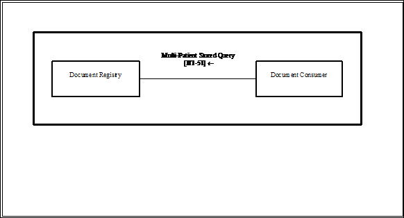
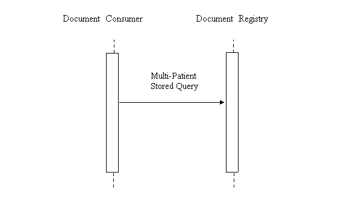

IHE IT Infrastructure (ITI)
Technical Framework
Revision 16.0 – Final Text
The Multi-Patient Queries Profile defines a mechanism to enable aggregated queries to a Document Registry based on certain criteria needed by areas related to data analysis, such as quality accreditation of health care practitioners or health care facilities, clinical research trial data collection or population health monitoring.
Figure 25.1-1 shows the actors directly involved in the MPQ Integration Profile in a solely XDS Affinity Domain and the relevant transactions between them. Other actors that may be indirectly involved due to their participation in other related profiles, etc. are not necessarily shown.

Figure 25.1-1: Multi-Patient Queries Actor Diagram
Table 25.1-1 lists the transactions for each actor directly involved in the Multi-Patient Query Profile. In order to claim support of this Integration Profile, an implementation must perform the required transactions (labeled “R”). Transactions labeled “O” are optional. A complete list of options defined by this Integration Profile and that implementations may choose to support is listed in ITI TF-1: 25.2.
Table 25.1-1: Multi-Patient Queries Integration Profile - Actors and Transactions
|
Actors |
Transactions |
Optionality |
Vol. & Section |
|
Document Registry |
Multi-Patient Stored Query [ITI-51] |
R |
|
|
Document Consumer |
Multi-Patient Stored Query [ITI-51] |
R |
Options that may be selected for this Integration Profile are listed in Table 25.2-1 along with the Actors to which they apply. Dependencies between options when applicable are specified in notes.
Table 25.2-1: MPQ - Actors and Options
|
Actor |
Options |
Vol. & Section |
|
Document Registry |
Asynchronous Web Services Exchange |
|
|
PatientId Only Query |
||
|
Document Consumer |
Asynchronous Web Services Exchange |
ITI TF-1: 25.2. 1 |
Asynchronous processing is necessary to support scaling to large numbers of sources and recipients because Asynchronous Web Services Exchange allows for more efficient handling of latency and scale. This WS-Addressing Asynchronous Web Services Exchange stack relies on the Web Service Addressing Stack (see also ITI TF-2x: Appendix V.3).
Actors that support this option shall support the following:
Use of Synchronous or Asynchronous Web Services Exchange is dictated by the individual install environment and policies.
A Document Registry that supports this option shall allow Document Consumers to submit MPQ requests that specify one or more patientId values as query parameters, without specifying certain other query parameters specified in ITI TF-2b: 3.51.4.1.2.1.
Document Consumers that specify patientId without the other query parameters will need to be robust to Document Registries that do not support this option . For example, in place of a FindDocumentsForMultiplePatients query with only patientId specified, the Document Consumer may:
This section describes the process and information flow when a Document Consumer will query a Document Registry.

Figure 25.3-1: Basic Process Flow in Multi-Patient Queries Profile
Current Situation
The emergency department at Hospital A is treating patient B for certain symptoms, which are indicative of a reportable condition (such as A1H1), according to already established guidelines from an official public health agency. The symptoms mandate the use of a pre-determined value set for the XDS metadata eventCodeList . This can be a combination of the eventCodeList and observation such as “ influenza” and “ possible A1H1” . Hospital A sends any type of document capturing this information such as a Discharge Summary, an ED Encounter Summary (EDES), or in a larger sense any document intended for this purpose, using an XDS.b Provide and Register Set,b [ITI-41] transaction to the local XDS Document Repository, as well as a report to the appropriate public health agency P, using mechanisms which are outside the scope of this supplement.
After reviewing the report, the public health agency P determines that a review of recent patients’ encounters with similar symptoms is necessary. Unfortunately, the XDS Document Registry only accepts patient specific queries, as currently defined in the Stored Query transaction. The public health agency P needs to obtain a list of patients with the appropriate symptoms from the healthcare providers.
Hospital A queries the local Document Registry for other Document Entries containing the same event code. Since it is not possible to query for multiple patients in one operation, a query is initiated for each patient known to the Document Registry. This is very time consuming and may not be very accurate.
Desirable Situation
The emergency department at Hospital A is treating patient B for certain symptoms, which are indicative of a reportable condition (such as A1H1), according to already established guidelines from an official public health agency. The symptoms mandate the use of a pre-determined value set for the XDS metadata eventCodeList. This can be a combination of the eventCodeList and observation such as “influenza” and “possible A1H1”. Hospital A sends any type of document capturing this information such as a Discharge Summary, an ED Encounter Summary (EDES), or in a larger sense any document intended for this purpose, using an XDS.b Provide and Register transaction to the local XDS Document Repository, as well as a report to the appropriate public health agency P, using mechanisms which are outside the scope of this supplement.
After reviewing the report, the public health agency P determines that a review of recent patients’ encounters with similar symptoms is necessary. Using Multi-Patient Queries, the health care provider is able to provide in a timely and accurate fashion all the documents with the having the same pre-determined value in the eventCodeList XDS metadata to the public health agency P. The public health agency is able to initiate an appropriate response and hence to contain a possible outbreak of the A1H1.
There are needs to aggregate data so that a pattern can emerge, but the patients’ identities need not to be known. For example, CDC (The Center for Disease Control and Prevention) or the InVS in France would like to know how many case s of A1H1 are present at a national level at one point in time. In this case, there is no need to identify the patient, and unless other data is necessary to establish a trend (such as age, for example); an aggregated query on the metadata eventCodeList is sufficient using the ObjectRefs query. In this case irreversible pseudonymization or anonymization can be used since the data is employed statistically to generate a trend. This is the simplest case of implementing policies regarding security and privacy.
There are other cases where statistical analysis in semi-real time is desired, such as an aggregated query at a district level to do profiling by region in times of an influenza epidemic. Again, this is a situation where the patient’s identity is not needed, but the number of cases and perhaps certain parameters such as the date. In order to be able to perform the aggregated queries, there has to be a minimum data set as per HIPAA recommendations.
If more scrutiny is needed, such as inpatient safety (reporting to FDA a patient safety issue concerning medications, medical equipment malfunction, or surgical procedures), or population health monitoring such as the real-time control of an outbreak), detailed queries can be used.
If in the Stored Query the LeafClass are specified the metadata of the document or of the folder (including the document ID and Repository ID) is returned. According to policies, these metadata can be pseudonymized or not.
For the multi-patient queries for detailed use, depending on the need, the policies regarding patient’s privacy are different.
The output of a Multi-Patient Query can be in one of two forms: a list of opaque identifiers, each identifying a matching document (assuming that the query targets Document Entries and not Folders or Submission Sets); or full metadata where all details known in metadata are returned.
Opaque identifiers, known in XDS as ObjectRefs, are useful to: discover the number of matches in the registry and then possibly to later retrieve the full metadata for the matching registry content. Applications that need only statistics (counts) can count the returned identifiers. Note that these identifiers represent documents (for example) that match the query and not patients. A single patient could have multiple matching documents.
A Multi-Patient Query can return full metadata, known as LeafClass in XDS. This metadata includes Patient Ids and patient demographics from potentially multiple patients so it is difficult to protect yet must be protected. Because of this sensitivity this type of return result would likely be only allowed by very highly trusted systems and thus this query is likely not to be available as widely as others.
This profile applies the same ATNA grouping as the XDS Profile to protect against the typical XDS identified risks . The MPQ Document Consumer and the MPQ Document Registry shall be grouped with an ATNA Secure Node or Secure Application Actor .
Actors in this profile may be grouped with actors in the Cross-Enterprise User Assertion (XUA) Profile to further provide authentication of the user of the result.
The security and privacy considerations arise because this profile allows for a single query to result in multiple patients XDS metadata to be returned in one transaction. Although the XDS metadata is not high-grade health data it is still identifiable health information and thus needs to be protected. The combination of multiple patient’s protected information in the same result results in a more difficult task to assure that the intended recipient has all the authorizations necessary for the intended use. In classical XDS queries the query request/response is constrained to a single patient and therefore the access control decision can be done across the whole transaction.
This profile allows for two different types of return result. The ObjectRef result can be used to limit the exposure as this result will return only opaque identifiers of the matching documents. It is expected that this result would be more widely allowed. The Document Consumer can still obtain the full metadata but must use the classic XDS queries on an object-by-object basis thus allowing for transactions that are constrained to a single patient. This additional set of transactions to retrieve the metadata may be unnecessary when the system doing the query is authorized to use the LeafClass response. For example , when the querying system is known as a system that will protect the information to the same degree. Where it is known that this querying system will apply the appropriate access control prior to ultimate use or disclosure.